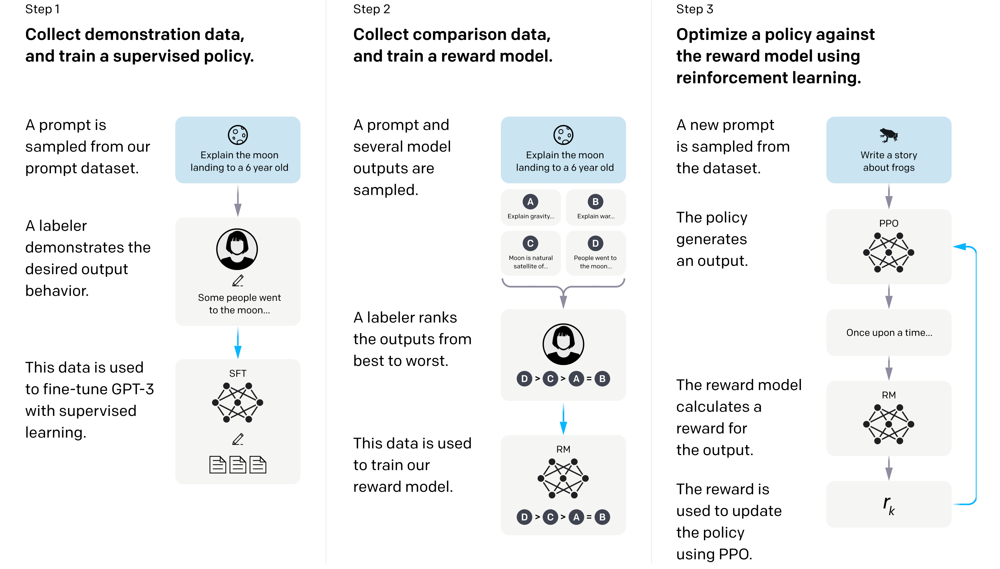
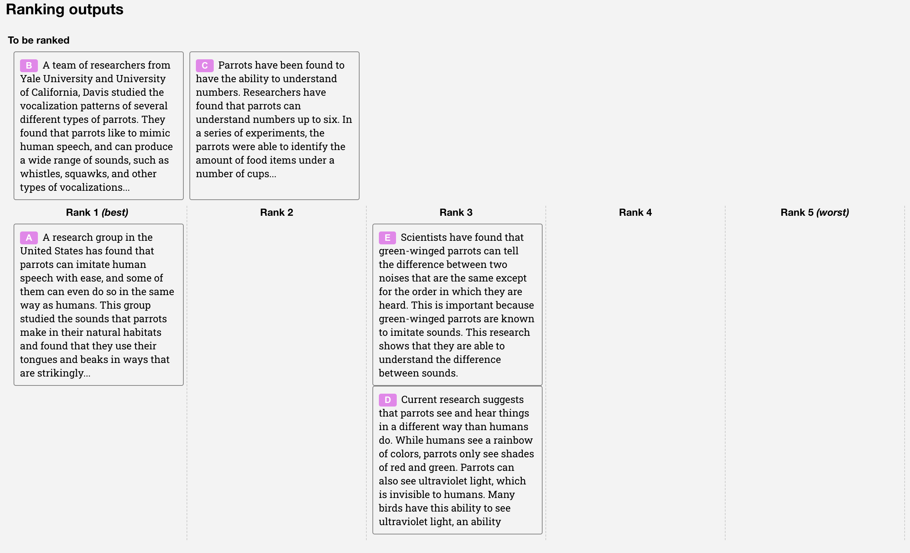
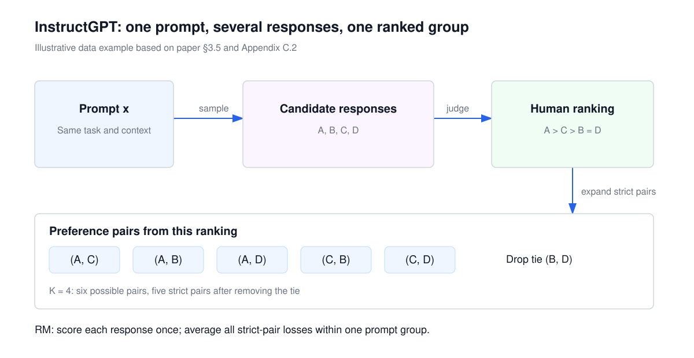
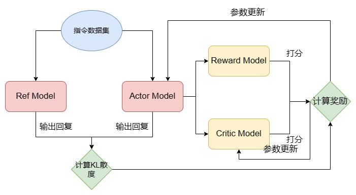
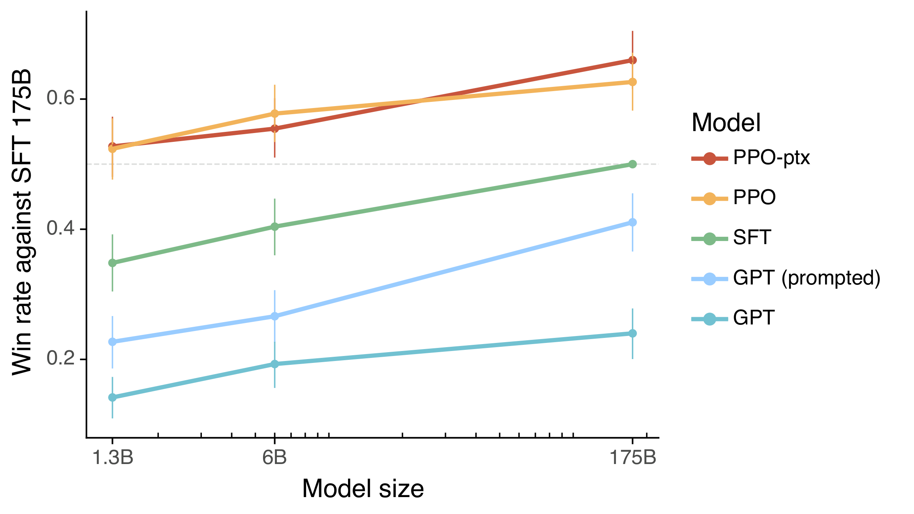
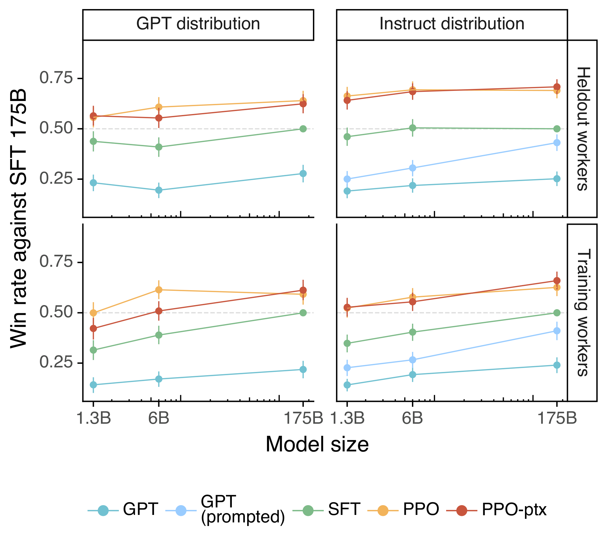
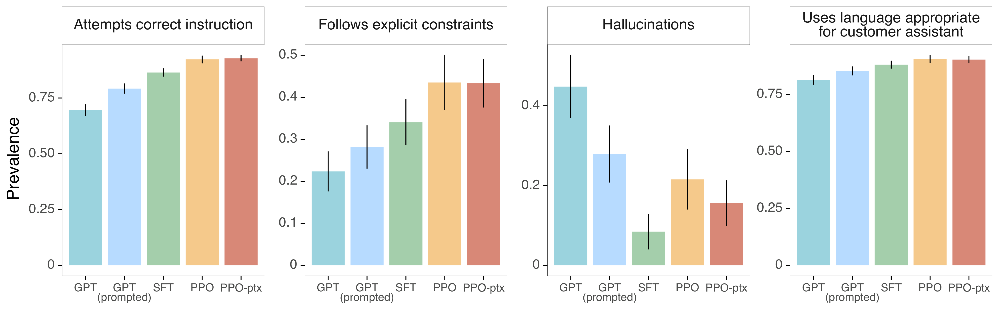
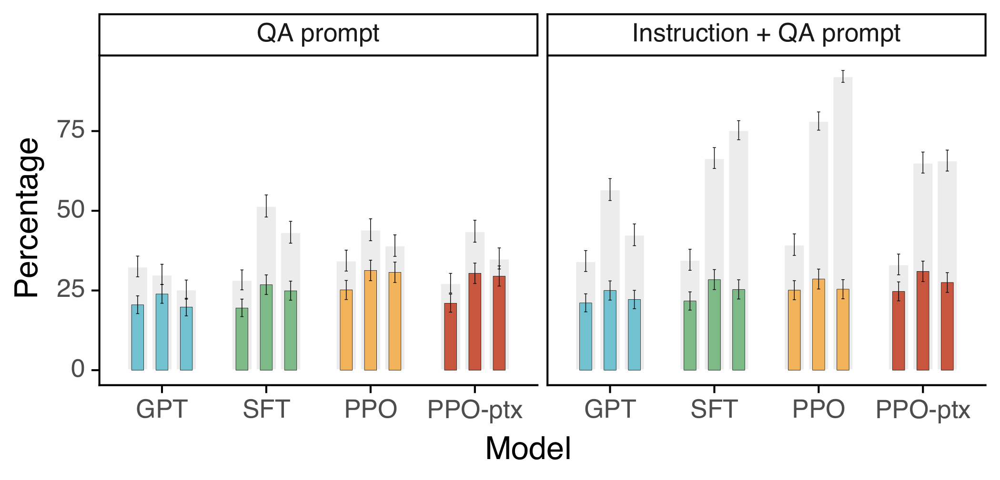
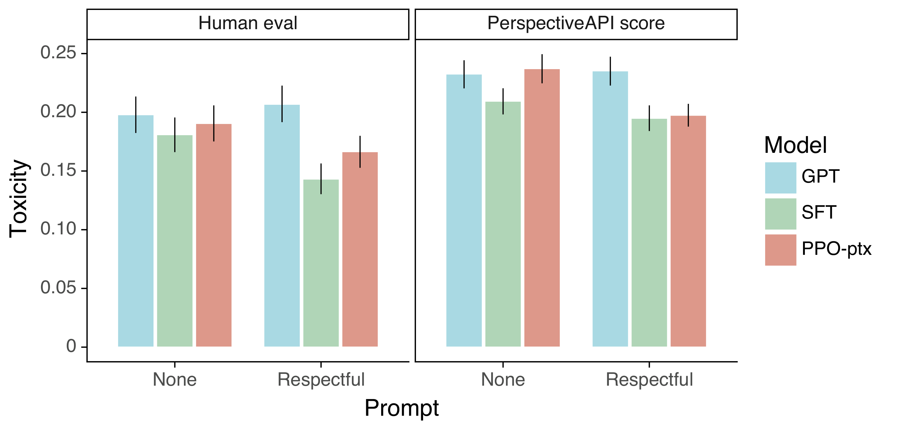
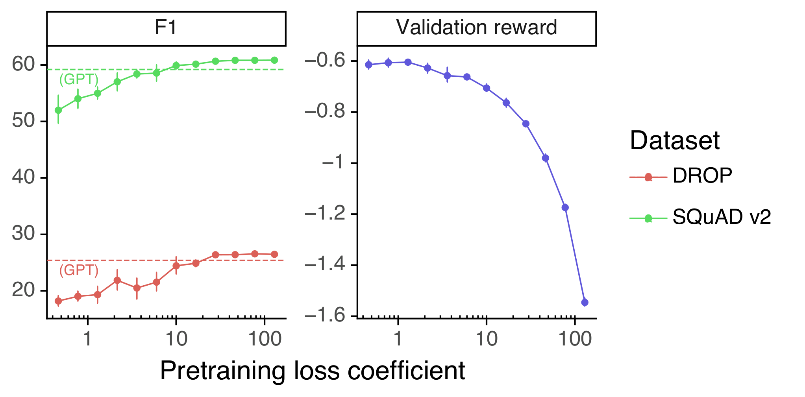

Abstract
Making language models bigger does not inherently make them better at following a user's intent. For example, large language models can generate outputs that are untruthful, toxic, or simply not helpful to the user. In other words, these models are not aligned with their users. In this paper, we show an avenue for aligning language models with user intent on a wide range of tasks by fine-tuning with human feedback. Starting with a set of labeler-written prompts and prompts submitted through the OpenAI API, we collect a dataset of labeler demonstrations of the desired model behavior, which we use to fine-tune GPT-3 using supervised learning. We then collect a dataset of rankings of model outputs, which we use to further fine-tune this supervised model using reinforcement learning from human feedback. We call the resulting models InstructGPT. In human evaluations on our prompt distribution, outputs from the 1.3B parameter InstructGPT model are preferred to outputs from the 175B GPT-3, despite having 100x fewer parameters. Moreover, InstructGPT models show improvements in truthfulness and reductions in toxic output generation while having minimal performance regressions on public NLP datasets. Even though InstructGPT still makes simple mistakes, our results show that fine-tuning with human feedback is a promising direction for aligning language models with human intent.
把语言模型做得更大，并不必然让它更好地遵循用户意图。例如，大型语言模型可能生成不真实、有毒或对用户毫无帮助的输出。换言之，这些模型没有与其用户对齐。本文展示一条通过人类反馈微调、在广泛任务上把语言模型对齐到用户意图的路径。我们从一组标注者撰写的提示与通过 OpenAI API 提交的提示出发，收集标注者对期望模型行为的示范数据，用它以监督学习微调 GPT-3。随后我们收集模型输出的排序数据，用它通过基于人类反馈的强化学习进一步微调该监督模型。我们把得到的模型称为 InstructGPT。在我们提示分布上的人工评估中，1.3B 参数 InstructGPT 的输出比 175B GPT-3 更受偏好，尽管参数量少 100 倍。此外，InstructGPT 在真实性上有提升、有毒输出减少，同时在公开 NLP 数据集上的性能回退很小。尽管 InstructGPT 仍会犯简单错误，结果表明用人类反馈微调是让语言模型与人类意图对齐的有希望方向。
摘要的功能
先指出“更大不等于更听话”，再给出三阶段方法（示范、排序、PPO）与主要结果。阅读时要把“更受偏好”与“所有能力更强”分开。
1. Introduction
Large language models (LMs) can be “prompted” to perform a range of natural language processing (NLP) tasks, given some examples of the task as input. However, these models often express unintended behaviors such as making up facts, generating biased or toxic text, or simply not following user instructions (Bender et al., 2021; Bommasani et al., 2021; Kenton et al., 2021; Weidinger et al., 2021; Tamkin et al., 2021; Gehman et al., 2020). This is because the language modeling objective used for many recent large LMs—predicting the next token on a webpage from the internet—is different from the objective “follow the user's instructions helpfully and safely” (Radford et al., 2019; Brown et al., 2020; Fedus et al., 2021; Rae et al., 2021; Thoppilan et al., 2022). Thus, we say that the language modeling objective is misaligned. Averting these unintended behaviors is especially important for language models that are deployed and used in hundreds of applications.
We make progress on aligning language models by training them to act in accordance with the user's intention (Leike et al., 2018). This encompasses both explicit intentions such as following instructions and implicit intentions such as staying truthful, and not being biased, toxic, or otherwise harmful. Using the language of Askell et al. (2021), we want language models to be helpful (they should help the user solve their task), honest (they shouldn't fabricate information or mislead the user), and harmless (they should not cause physical, psychological, or social harm to people or the environment). We elaborate on the evaluation of these criteria in Section 3.6.
大型语言模型（LM）只要在输入中给出任务示例，就可以被“提示”去完成一系列自然语言处理（NLP）任务。然而，这些模型经常表现出非预期的行为，例如编造事实、生成有偏见或有毒的文本，或者干脆不遵循用户指令（Bender et al., 2021; Bommasani et al., 2021; Kenton et al., 2021; Weidinger et al., 2021; Tamkin et al., 2021; Gehman et al., 2020）。这是因为许多近期大型 LM 所用的语言建模目标——预测互联网网页上的下一个 token——与“有帮助且安全地遵循用户指令”这一目标并不相同（Radford et al., 2019; Brown et al., 2020; Fedus et al., 2021; Rae et al., 2021; Thoppilan et al., 2022）。因此，我们说语言建模目标是错位的。对于被部署并用于数百种应用的语言模型来说，避免这些非预期行为尤其重要。
我们通过训练语言模型按照用户意图行事，来推进对齐研究（Leike et al., 2018）。这既包括显式意图，例如遵循指令，也包括隐式意图，例如保持真实、不带有偏见、不有毒或以其他方式有害。借用 Askell et al. (2021) 的说法，我们希望语言模型有帮助（帮助用户完成任务）、诚实（不编造信息或误导用户）且无害（不对人/环境造成身体、心理或社会伤害）。我们在 3.6 节详细讨论这些标准的评估。
问题定义
把“预训练目标”与“用户意图”区分开：前者拟合互联网文本分布，后者要求在给定任务时选择合适行为。
三个目标
helpful / honest / harmless 是论文的评价框架；其中 honesty 只能通过 truthfulness 等可观测指标近似。
We focus on fine-tuning approaches to aligning language models. Specifically, we use reinforcement learning from human feedback (RLHF (Christiano et al., 2017; Stiennon et al., 2020) to fine-tune GPT-3 to follow a broad class of written instructions (see Figure 2). This technique uses human preferences as a reward signal to fine-tune our models. We first hire a team of 40 contractors to label our data, based on their performance on a screening test (see Section 3.4 and Appendix B.1 for more details). We then collect a dataset of human-written demonstrations of the desired output behavior on (mostly English) prompts submitted to the OpenAI API and some labeler-written prompts, and use this to train our supervised learning baselines. Next, we collect a dataset of human-labeled comparisons between outputs from our models on a larger set of API prompts. We then train a reward model (RM) on this dataset to predict which model output our labelers would prefer. Finally, we use this RM as a reward function and fine-tune our supervised learning baseline to maximize this reward using the PPO algorithm (Schulman et al., 2017). We illustrate this process in Figure 2. This procedure aligns the behavior of GPT-3 to the stated preferences of a specific group of people (mostly our labelers and researchers), rather than any broader notion of “human values”; we discuss this further in Section 5.2. We call the resulting models InstructGPT.
我们聚焦于用微调方法对齐语言模型。具体来说，我们使用基于人类反馈的强化学习（RLHF；Christiano et al., 2017; Stiennon et al., 2020）微调 GPT-3，使其遵循一大类书面指令（见图 2）。该技术把人类偏好作为奖励信号来微调模型。我们首先根据筛选测试的表现，雇佣约 40 名合同标注者来标注数据（详见 3.4 节与附录 B.1）。随后，我们收集人类撰写的、针对（主要是英语）OpenAI API 提示与部分标注者自写提示的期望行为示范，用它训练监督学习基线。接着，我们在更大的 API 提示集合上收集模型输出之间的人工比较数据，并训练奖励模型（RM）来预测标注者更偏好哪个输出。最后，我们把这个 RM 作为奖励函数，用 PPO 算法（Schulman et al., 2017）微调监督学习基线以最大化该奖励。图 2 展示了这一过程。该流程把 GPT-3 的行为对齐到特定人群（主要是我们的标注者与研究者）所声明的偏好，而不是任何更宽泛的“人类价值”概念；我们在 5.2 节进一步讨论这一点。我们把得到的模型称为 InstructGPT。
三阶段流水线
SFT 示范 → 偏好比较/RM → PPO。注意“对齐对象”是特定标注群体，不是抽象全人类。
数据单位
示范数据是 (x, y)；比较数据是同一提示下的多个回答及排序；PPO 数据只有提示，回答在训练中采样。
We mainly evaluate our models by having our labelers rate the quality of model outputs on our test set, consisting of prompts from held-out customers (who are not represented in the training data). We also conduct automatic evaluations on a range of public NLP datasets. We train three model sizes (1.3B, 6B, and 175B parameters), and all of our models use the GPT-3 architecture. Our main findings are as follows:
Labelers significantly prefer InstructGPT outputs over outputs from GPT-3. On our test set, outputs from the 1.3B parameter InstructGPT model are preferred to outputs from the 175B GPT-3, despite having over 100x fewer parameters. These models have the same architecture, and differ only by the fact that InstructGPT is fine-tuned on our human data. This result holds true even when we add a few-shot prompt to GPT-3 to make it better at following instructions. Outputs from our 175B InstructGPT are preferred to 175B GPT-3 outputs 85 ± 3% of the time, and preferred 71 ± 4% of the time to few-shot 175B GPT-3. InstructGPT models also generate more appropriate outputs according to our labelers, and more reliably follow explicit constraints in the instruction.
我们主要通过让标注者评价模型在测试集上的输出质量来评估模型；测试集由留出用户（未出现在训练数据中）的提示组成。我们还在多个公开 NLP 数据集上做自动评估。我们训练了 1.3B、6B 与 175B 三种规模，全部采用 GPT-3 架构。我们的主要发现如下：
标注者显著更偏好 InstructGPT 的输出，而非 GPT-3 的输出。在测试集上，1.3B 参数 InstructGPT 的输出比 175B GPT-3 更受偏好，尽管参数量少 100 倍以上。二者架构相同，唯一区别是 InstructGPT 用我们的人类数据做了微调。即使给 GPT-3 加上 few-shot 提示以改善其指令遵循，这一结果仍然成立。175B InstructGPT 的输出在 85 ± 3% 的情况下优于 175B GPT-3，在 71 ± 4% 的情况下优于 few-shot 175B GPT-3。标注者还认为 InstructGPT 的输出更恰当，并且更可靠地遵循指令中的显式约束。
评估设计
主指标是留出提示上的人工偏好胜率；另外报告公共 NLP 基准。三种规模用于检查趋势。
关键数字
85% / 71% 是 175B InstructGPT 对 175B GPT-3 / few-shot GPT-3 的直接胜率；不要与图 1 中“相对 175B SFT”的纵轴混淆。
InstructGPT models show improvements in truthfulness over GPT-3. On the TruthfulQA benchmark, InstructGPT generates truthful and informative answers about twice as often as GPT-3. Our results are equally strong on the subset of questions that were not adversarially selected against GPT-3. On “closed-domain” tasks from our API prompt distribution, where the output should not contain information that is not present in the input (e.g. summarization and closed-domain QA), InstructGPT models make up information not present in the input about half as often as GPT-3 (a 21% vs. 41% hallucination rate, respectively).
InstructGPT shows small improvements in toxicity over GPT-3, but not bias. To measure toxicity, we use the RealToxicityPrompts dataset (Gehman et al., 2020) and conduct both automatic and human evaluations. InstructGPT models generate about 25% fewer toxic outputs than GPT-3 when prompted to be respectful. InstructGPT does not significantly improve over GPT-3 on the Winogender (Rudinger et al., 2018) and CrowSPairs (Nangia et al., 2020) datasets.
InstructGPT 在真实性上优于 GPT-3。在 TruthfulQA 基准上，InstructGPT 生成真实且有信息量的回答的频率约为 GPT-3 的两倍。在未被专门对抗性筛选、用于针对 GPT-3 的问题子集上，结果同样强。在我们的 API 提示分布中的“封闭域”任务上（输出不应包含输入中没有的信息，例如摘要与封闭域问答），InstructGPT 编造输入中不存在的信息的频率约为 GPT-3 的一半（幻觉率分别为 21% 与 41%）。
InstructGPT 在毒性上有小幅改善，但在偏见上没有。我们用 RealToxicityPrompts 数据集（Gehman et al., 2020）测量毒性，并进行自动与人工评估。当提示要求尊重时，InstructGPT 生成的有毒输出比 GPT-3 少约 25%。在 Winogender（Rudinger et al., 2018）与 CrowSPairs（Nangia et al., 2020）数据集上，InstructGPT 相对 GPT-3 没有显著改善。
真实性与幻觉
TruthfulQA 测开放域事实真实性；21% vs 41% 是封闭域任务上的“编造输入外信息”率，两者不是同一指标。
毒性有条件
“尊重提示”下毒性下降；去掉提示优势消失。偏见指标没有显著改善，说明对齐不是全面安全。
We can minimize performance regressions on public NLP datasets by modifying our RLHF fine-tuning procedure. During RLHF fine-tuning, we observe performance regressions compared to GPT-3 on certain public NLP datasets, notably SQuAD (Rajpurkar et al., 2018), DROP (Dua et al., 2019), HellaSwag (Zellers et al., 2019), and WMT 2015 French to English translation (Bojar et al., 2015). This is an example of an “alignment tax” since our alignment procedure comes at the cost of lower performance on certain tasks that we may care about. We can greatly reduce the performance regressions on these datasets by mixing PPO updates with updates that increase the log likelihood of the pretraining distribution (PPO-ptx), without compromising labeler preference scores.
Our models generalize to the preferences of “held-out” labelers that did not produce any training data. To test the generalization of our models, we conduct a preliminary experiment with held-out labelers, and find that they prefer InstructGPT outputs to outputs from GPT-3 at about the same rate as our training labelers. However, more work is needed to study how these models perform on broader groups of users, and how they perform on inputs where humans disagree about the desired behavior.
通过修改 RLHF 微调流程，可以最小化公开 NLP 数据集上的性能回退。在 RLHF 微调期间，我们观察到模型在某些公开 NLP 数据集上相对 GPT-3 出现性能回退，尤其是 SQuAD（Rajpurkar et al., 2018）、DROP（Dua et al., 2019）、HellaSwag（Zellers et al., 2019）以及 WMT 2015 法英翻译（Bojar et al., 2015）。这是“对齐税”的一个例子：对齐过程以某些我们可能关心的任务上的性能下降为代价。通过把 PPO 更新与“提高预训练分布对数似然”的更新混合（PPO-ptx），我们可以在不损害标注者偏好分数的前提下，大幅减少这些数据集上的性能回退。
我们的模型能泛化到未参与任何训练数据的“留出”标注者的偏好。为检验泛化性，我们用留出标注者做了初步实验，发现他们偏好 InstructGPT 输出而非 GPT-3 输出的比例，与训练标注者大致相同。不过，还需要更多工作来研究这些模型在更广泛用户群体上的表现，以及它们在人类对期望行为存在分歧的输入上的表现。
对齐税
偏好训练可能牺牲公共基准能力；PPO-ptx 用预训练梯度缓解，但不是完全消除。
标注者泛化
留出标注者来自同一供应商，只能说明有限范围内的泛化，不能代表所有人群。
InstructGPT still makes simple mistakes. For example, InstructGPT can still fail to follow instructions, make up facts, give long hedging answers to simple questions, or fail to detect instructions with false premises.
Overall, our results indicate that fine-tuning large language models using human preferences significantly improves their behavior on a wide range of tasks, though much work remains to be done to improve their safety and reliability.
The rest of this paper is structured as follows: We first detail related work in Section 2, before diving into our method and experiment details in Section 3, including our high-level methodology (3.1), task and dataset details (3.3 and 3.2), human data collection (3.4), how we trained our models (3.5), and our evaluation procedure (3.6). We then present our results in Section 4, divided into three parts: results on the API prompt distribution (4.1), results on public NLP datasets (4.2), and qualitative results (4.3). Finally we give an extended discussion of our work in Section 5, including implications for alignment research (5.1), what we are aligning to (5.2), limitations (5.3), open questions (5.4), and broader impacts of this work (5.5).
InstructGPT 仍会犯简单错误。例如，它仍可能不遵循指令、编造事实、对简单问题给出冗长的模棱两可回答，或者无法识别含错误前提的指令。
总体而言，我们的结果表明，用人类偏好微调大型语言模型能显著改善其在广泛任务上的行为，但在提升安全性与可靠性方面仍有大量工作要做。
本文其余部分安排如下：第 2 节详述相关工作；第 3 节介绍方法与实验细节，包括高层方法（3.1）、任务与数据集（3.3 与 3.2）、人类数据收集（3.4）、模型训练（3.5）与评估流程（3.6）；第 4 节给出结果，分为 API 提示分布（4.1）、公开 NLP 数据集（4.2）与定性结果（4.3）；第 5 节展开讨论，包括对对齐研究的启示（5.1）、我们到底在对齐谁（5.2）、局限（5.3）、开放问题（5.4）与更广泛影响（5.5）。
作者承认的失败
错误前提、过度保留、多约束失败都在正文与讨论中明确列出，属于论文自述局限。
阅读路线
先看 3.1 的三阶段，再看 3.5 的 RM/PPO 细节，最后用 4.2 的指标边界校正“全面更好”的直觉。
2. Related Work
Research on alignment and learning from human feedback. We build on previous techniques to align models with human intentions, particularly reinforcement learning from human feedback (RLHF). Originally developed for training simple robots in simulated environments and Atari games (Christiano et al., 2017; Ibarz et al., 2018), it has recently been applied to fine-tuning language models to summarize text Ziegler et al., 2019; Stiennon et al., 2020; Böhm et al., 2019; Wu et al., 2021. This work is in turn influenced by similar work using human feedback as a reward in domains such as dialogue (Jaques et al., 2019; Yi et al., 2019; Hancock et al., 2019), translation (Kreutzer et al., 2018; Bahdanau et al., 2016), semantic parsing (Lawrence and Riezler, 2018), story generation (Zhou and Xu, 2020), review generation (Cho et al., 2018), and evidence extraction (Perez et al., 2019). (Madaan et al., 2022) use written human feedback to augment prompts and improve the performance of GPT-3. There has also been work on aligning agents in text-based environments using RL with a normative prior (Nahian et al., 2021). Our work can be seen as a direct application of RLHF to aligning language models on a broad distribution of language tasks.
The question of what it means for language models to be aligned has also received attention recently (Gabriel, 2020). (Kenton et al., 2021) catalog behavioral issues in LMs that result from misalignment, including producing harmful content and gaming misspecified objectives. In concurrent work, (Askell et al., 2021) propose language assistants as a testbed for alignment research, study some simple baselines, and their scaling properties.
对齐与从人类反馈学习的研究。我们建立在先前把模型对齐到人类意图的技术之上，尤其是基于人类反馈的强化学习（RLHF）。它最初用于在仿真环境与 Atari 游戏中训练简单机器人（Christiano et al., 2017; Ibarz et al., 2018），最近被用于微调语言模型做文本摘要（Ziegler et al., 2019; Stiennon et al., 2020; Böhm et al., 2019; Wu et al., 2021）。这项工作又受到在对话、翻译、语义解析、故事生成、评论生成与证据抽取等领域用人类反馈作为奖励的类似工作影响。Madaan et al. (2022) 用书面人类反馈增强提示并提升 GPT-3 表现；也有工作用带规范先验的 RL 在文本环境中对齐智能体（Nahian et al., 2021）。我们的工作可以看作把 RLHF 直接应用于在广泛语言任务分布上对齐语言模型。
语言模型“对齐”意味着什么，最近也受到关注（Gabriel, 2020）。Kenton et al. (2021) 归纳了错位导致的行为问题，包括生成有害内容与钻错误目标的空子。在并发工作中，Askell et al. (2021) 提出把语言助手作为对齐研究的试验台，研究了一些简单基线及其扩展性质。
定位
RLHF 不是本文首创；本文把它从控制/摘要扩展到广泛用户指令，并系统评估。
两条邻近路线
“对齐是什么”的概念讨论与“语言助手试验台”是背景，不是本文的实验贡献。
3.1 High-level methodology
Step 1: Collect demonstration data, and train a supervised policy. Our labelers provide demonstrations of the desired behavior on the input prompt distribution (see Section 3.2 for details on this distribution). We then fine-tune a pretrained GPT-3 model on this data using supervised learning.
Step 2: Collect comparison data, and train a reward model. We collect a dataset of comparisons between model outputs, where labelers indicate which output they prefer for a given input. We then train a reward model to predict the human-preferred output.
Step 3: Optimize a policy against the reward model using PPO. We use the output of the RM as a scalar reward. We fine-tune the supervised policy to optimize this reward using the PPO algorithm (Schulman et al., 2017).
步骤 1：收集示范数据，训练监督策略。标注者针对输入提示分布给出期望行为的示范（该分布的细节见 3.2 节）。然后我们用监督学习在這些数据上微调预训练 GPT-3。
步骤 2：收集比较数据，训练奖励模型。我们收集模型输出之间的比较数据，标注者指出在给定输入下更偏好哪个输出。然后训练奖励模型预测人类偏好的输出。
步骤 3：用 PPO 针对奖励模型优化策略。我们把 RM 的输出作为标量奖励，用 PPO 算法（Schulman et al., 2017）微调监督策略以优化该奖励。
三步的分工
示范教“怎么做”，比较教“哪个更好”，PPO 把评价标准用于新生成的回答。三者不能互相替代。

3.2 Dataset
Our prompt dataset consists primarily of text prompts submitted to the OpenAI API, specifically those using an earlier version of the InstructGPT models (trained via supervised learning on a subset of our demonstration data) on the Playground interface. Customers using the Playground were informed that their data could be used to train further models via a recurring notification any time InstructGPT models were used. In this paper we do not use data from customers using the API in production. We heuristically deduplicate prompts by checking for prompts that share a long common prefix, and we limit the number of prompts to 200 per user ID. We also create our train, validation, and test splits based on user ID, so that the validation and test sets contain no data from users whose data is in the training set. To avoid the models learning potentially sensitive customer details, we filter all prompts in the training split for personally identifiable information (PII).
我们的提示数据集主要由提交给 OpenAI API 的文本提示组成，具体来说是早期版本 InstructGPT 模型（在我们的示范数据子集上经监督学习训练）在 Playground 界面中收到的提示。使用 Playground 的客户会通过每次使用 InstructGPT 模型时重复出现的通知得知，其数据可能被用于训练后续模型。本文不使用生产 API 客户的数据。我们通过检查共享长公共前缀的提示做启发式去重，并把每个用户 ID 的提示数限制为 200 条。我们还按用户 ID 划分训练、验证与测试集，使验证/测试集不包含训练集中任何用户的数据。为避免模型学到可能敏感的客户细节，我们对训练集的所有提示做个人可识别信息（PII）过滤。
数据来源与去泄漏
按用户 ID 划分，而不是随机按提示划分；这避免同一用户的提示同时出现在训练与测试中。
隐私
训练提示做 PII 过滤；论文明确不使用生产 API 数据。
From these prompts, we produce three different datasets used in our fine-tuning procedure: (1) our SFT dataset, with labeler demonstrations used to train our SFT models, (2) our RM dataset, with labeler rankings of model outputs used to train our RMs, and (3) our PPO dataset, without any human labels, which are used as inputs for RLHF fine-tuning. The SFT dataset contains about 13k training prompts (from the API and labeler-written), the RM dataset has 33k training prompts (from the API and labeler-written), and the PPO dataset has 31k training prompts (only from the API). More details on dataset sizes are provided in Table 6.
从这些提示出发，我们构造了微调流程使用的三个不同数据集：（1）SFT 数据集，含标注者示范，用于训练 SFT 模型；（2）RM 数据集，含标注者对模型输出的排序，用于训练奖励模型；（3）PPO 数据集，不含任何人工标签，仅作为 RLHF 微调的输入。SFT 数据集约有 13k 条训练提示（来自 API 与标注者自写），RM 数据集有 33k 条训练提示（来自 API 与标注者自写），PPO 数据集有 31k 条训练提示（仅来自 API）。更详细的数据规模见 Table 6。
三个数据集
13k / 33k / 31k 是提示数，不是偏好对数或 rollout 数。RM 的一个提示可展开多个比较对；PPO 的同一提示会被反复采样。
3.4 Human data collection
To produce our demonstration and comparison data, and to conduct our main evaluations, we hired a team of about 40 contractors on Upwork and through ScaleAI. Compared to earlier work that collects human preference data on the task of summarization (Ziegler et al., 2019; Stiennon et al., 2020; Wu et al., 2021), our inputs span a much broader range of tasks, and can occasionally include controversial and sensitive topics. Our aim was to select a group of labelers who were sensitive to the preferences of different demographic groups, and who were good at identifying outputs that were potentially harmful. Thus, we conducted a screening test designed to measure labeler performance on these axes. We selected labelers who performed well on this test; for more information about our selection procedure and labeler demographics, see Appendix B.1.
为生成示范与比较数据，并开展主要评估，我们在 Upwork 与 ScaleAI 上雇佣了约 40 名合同标注者。与早期在摘要任务上收集人类偏好数据的工作（Ziegler et al., 2019; Stiennon et al., 2020; Wu et al., 2021）相比，我们的输入覆盖的任务范围广得多，偶尔还会包含有争议和敏感的话题。我们的目标是选出一组对不同人口群体偏好敏感、且擅长识别潜在有害输出的标注者。因此，我们设计了一个筛选测试来衡量标注者在这两个维度上的表现，并选择表现好的标注者；筛选流程与标注者人口统计的更多信息见附录 B.1。
标注者筛选
约 40 人，经筛选与培训；不是随机众包。样本小、以英语为主，代表性有限。


As an initial study to see how well our model generalizes to the preferences of other labelers, we hire a separate set of labelers who do not produce any of the training data. These labelers are sourced from the same vendors, but do not undergo a screening test.
Despite the complexity of the task, we find that inter-annotator agreement rates are quite high: training labelers agree with each-other 72.6 ± 1.5% of the time, while for held-out labelers this number is 77.3 ± 1.3%. For comparison, in the summarization work of Stiennon et al., 2020) researcher-researcher agreement was 73 ± 4%.
作为初步研究，我们另外雇佣了一组不参与任何训练数据生产的标注者，以观察模型对其他标注者偏好的泛化。这些标注者来自同一供应商，但不经过筛选测试。
尽管任务复杂，我们发现标注者间一致率相当高：训练标注者彼此一致的时间比例为 72.6 ± 1.5%，留出标注者为 77.3 ± 1.3%。作为对比，在 Stiennon et al. (2020) 的摘要工作中，研究者之间的一致率为 73 ± 4%。
一致率
约 73% 说明偏好仍有大量分歧；单个标签不是绝对真值。留出标注者来自同一供应商，只验证有限泛化。
3.5 Models
We start with the GPT-3 pretrained language models from (Brown et al., 2020). These models are trained on a broad distribution of Internet data and are adaptable to a wide range of downstream tasks, but have poorly characterized behavior. Starting from these models, we then train models with three different techniques:
Supervised fine-tuning (SFT). We fine-tune GPT-3 on our labeler demonstrations using supervised learning. We trained for 16 epochs, using a cosine learning rate decay, and residual dropout of 0.2. We do our final SFT model selection based on the RM score on the validation set. Similarly to (Wu et al., 2021), we find that our SFT models overfit on validation loss after 1 epoch; however, we find that training for more epochs helps both the RM score and human preference ratings, despite this overfitting.
我们从 GPT-3 预训练语言模型出发（Brown et al., 2020）。这些模型在广泛的互联网数据分布上训练，能适配多种下游任务，但行为刻画不足。以这些模型为起点，我们用三种不同技术训练模型：
监督微调（SFT）。我们用监督学习在标注者示范上微调 GPT-3。训练 16 个 epoch，使用余弦学习率衰减与 0.2 的残差 dropout。最终 SFT 模型根据验证集上的 RM 分数选择。与 Wu et al. (2021) 类似，我们发现 SFT 模型在 1 个 epoch 后就在验证损失上过拟合；但尽管有过拟合，训练更多 epoch 仍能提升 RM 分数与人类偏好评分。
SFT 的细节
16 epochs、dropout 0.2、按 RM 分数选检查点；验证损失过拟合不等于偏好表现变差。
与 PPO 初始化的区别
这里说的是 SFT 基线；PPO 初始化另训 2 epochs 并混入 10% 预训练数据，见附录 C.3。
Reward modeling (RM). Starting from the SFT model with the final unembedding layer removed, we trained a model to take in a prompt and response, and output a scalar reward. In this paper we only use 6B RMs, as this saves a lot of compute, and we found that 175B RM training could be unstable and thus was less suitable to be used as the value function during RL (see Appendix C for more details).
In (Stiennon et al., 2020), the RM is trained on a dataset of comparisons between two model outputs on the same input. They use a cross-entropy loss, with the comparisons as labels—the difference in rewards represents the log odds that one response will be preferred to the other by a human labeler.
In order to speed up comparison collection, we present labelers with anywhere between K=4 and K=9 responses to rank. This produces C(K,2) comparisons for each prompt shown to a labeler. Since comparisons are very correlated within each labeling task, we found that if we simply shuffle the comparisons into one dataset, a single pass over the dataset caused the reward model to overfit. Instead, we train on all C(K,2) comparisons from each prompt as a single batch element. This is much more computationally efficient because it only requires a single forward pass of the RM for each completion rather than C(K,2) forward passes for K completions and, because it no longer overfits, it achieves much improved validation accuracy and log loss.
Specifically, the loss function for the reward model is:
奖励建模（RM）。从去掉最后 unembedding 层的 SFT 模型出发，我们训练一个接收提示与回答、输出标量奖励的模型。本文只使用 6B 的 RM，因为这样节省大量计算；我们发现 175B RM 训练可能不稳定，因此不太适合在 RL 中作为价值函数（详见附录 C）。
在 Stiennon et al. (2020) 中，RM 在“同一输入下两个模型输出之间的比较”数据集上训练。他们使用交叉熵损失，以比较为标签——奖励差表示一个回答被人类标注者偏好的对数几率。
为加快比较数据的收集，我们让标注者对 4 到 9 个回答进行排序。这样每个展示给标注者的提示会产生 C(K,2) 个比较。由于同一标注任务内的比较高度相关，我们发现如果简单地把比较打乱成一个数据集，单遍训练就会让奖励模型过拟合。相反，我们把每个提示的所有 C(K,2) 个比较作为一个批次元素训练。这在计算上高效得多，因为每个完成只需 RM 前向一次（而不是 K 个完成做 C(K,2) 次前向）；而且由于不再过拟合，验证准确率与对数损失都大幅改善。
具体来说，奖励模型的损失函数为：
为什么一次排序多个回答
K 个回答给出最多 K(K−1)/2 个比较，节省标注成本；但比较相关，必须按 prompt 分组。
前向复用
同一提示的 K 个回答各前向一次，复用分数计算所有比较；这比逐对前向高效得多。
式 (1)
对同一提示内的有效严格比较取平均；并列对不进入损失。$\sigma$ 为 sigmoid，奖励差决定偏好概率。
Reinforcement learning (RL). Once again following (Stiennon et al., 2020), we fine-tuned the SFT model on our environment using PPO (Schulman et al., 2017). The environment is a bandit environment which presents a random customer prompt and expects a response to the prompt. Given the prompt and response, it produces a reward determined by the reward model and ends the episode. In addition, we add a per-token KL penalty from the SFT model at each token to mitigate over-optimization of the reward model. The value function is initialized from the RM. We call these models “PPO.”
We also experiment with mixing the pretraining gradients into the PPO gradients, in order to fix the performance regressions on public NLP datasets. We call these models “PPO-ptx.” We maximize the following combined objective function in RL training:
强化学习（RL）。再次沿用 Stiennon et al. (2020)，我们用 PPO（Schulman et al., 2017）在环境中微调 SFT 模型。环境是一个 bandit 环境：它给出一个随机客户提示，期望模型给出回答；给定提示与回答后，它产生由奖励模型决定的奖励并结束回合。此外，我们在每个 token 上加入来自 SFT 模型的逐 token KL 惩罚，以缓解对奖励模型的过度优化。价值函数从 RM 初始化。我们把这类模型称为“PPO”。
我们还尝试把预训练梯度混入 PPO 梯度，以修复公开 NLP 数据集上的性能回退。我们把这类模型称为“PPO-ptx”。在 RL 训练中，我们最大化以下组合目标函数：
bandit 设定
每个提示-回答是一个回合；奖励是整条回答的标量，KL 惩罚按 token 施加。
四类模型
Actor、冻结 SFT 参考、RM、critic；critic 从 RM 初始化但独立更新。

式 (2)
第一项是奖励减 KL 惩罚；第二项是预训练似然。PPO 的 $\gamma=0$，PPO-ptx 加入预训练项。
where π_φ^RL is the learned RL policy, π^SFT is the supervised trained model, and D_pretrain is the pretraining distribution. The KL reward coefficient, β, and the pretraining loss coefficient, γ, control the strength of the KL penalty and pretraining gradients respectively. For "PPO" models, γ is set to 0. Unless otherwise specified, in this paper InstructGPT refers to the PPO-ptx models.
Baselines. We compare the performance of our PPO models to our SFT models and GPT-3. We also compare to GPT-3 when it is provided a few-shot prefix to ‘prompt' it into an instruction-following mode (GPT-3-prompted). This prefix is prepended to the user-specified instruction.
We additionally compare InstructGPT to fine-tuning 175B GPT-3 on the FLAN (Wei et al., 2021) and T0 (Sanh et al., 2021) datasets, which both consist of a variety of NLP tasks, combined with natural language instructions for each task (the datasets differ in the NLP datasets included, and the style of instructions used). We fine-tune them on approximately 1 million examples respectively and choose the checkpoint which obtains the highest reward model score on the validation set. See Appendix C for more training details.
其中 $\pi_\phi^{\mathrm{RL}}$ 是学到的 RL 策略，$\pi^{\mathrm{SFT}}$ 是监督训练模型，$D_{\mathrm{pretrain}}$ 是预训练分布。KL 奖励系数 $\beta$ 与预训练损失系数 $\gamma$ 分别控制 KL 惩罚与预训练梯度的强度。对“PPO”模型，$\gamma$ 设为 0。除非另有说明，本文中的 InstructGPT 指 PPO-ptx 模型。
基线。我们把 PPO 模型与 SFT 模型、GPT-3 比较；也把 GPT-3 加上 few-shot 前缀、使其进入指令遵循模式后比较（GPT-3-prompted）。该前缀被加在用户指令之前。
我们还将 InstructGPT 与在 FLAN（Wei et al., 2021）和 T0（Sanh et al., 2021）数据集上微调的 175B GPT-3 比较。这两个数据集都由多种 NLP 任务及每个任务的自然语言指令组成（包含的 NLP 数据集与指令风格不同）。我们分别在约 100 万个样本上微调，并选择验证集上 RM 分数最高的检查点。更多训练细节见附录 C。
系数
$\beta$ 控制相对 SFT 的偏离；$\gamma$ 控制预训练梯度。两者不能与 PPO 的 clip 参数混淆。
基线覆盖
GPT-3、prompted GPT-3、SFT、PPO、PPO-ptx、FLAN/T0；比较的是完整训练流程，不是单一算法替换。
3.6 Evaluation
To evaluate how “aligned” our models are, we first need to clarify what alignment means in this context. The definition of alignment has historically been a vague and confusing topic, with various competing proposals (Chen et al., 2021; Leike et al., 2018; Gabriel, 2020). Following (Leike et al., 2018), our aim is to train models that act in accordance with user intentions. More practically, for the purpose of our language tasks, we use a framework similar to (Askell et al., 2021), who define models to be aligned if they are helpful, honest, and harmless.
To be helpful, the model should follow instructions, but also infer intention from a few-shot prompt or another interpretable pattern such as “Q: question\ nA:”. Since a given prompt's intention can be unclear or ambiguous, we rely on judgment from our labelers, and our main metric is labeler preference ratings. However, since our labelers are not the users who generated the prompts, there could be a divergence between what a user actually intended and what the labeler thought was intended from only reading the prompt.
It is unclear how to measure honesty in purely generative models; this requires comparing the model's actual output to its “belief” about the correct output, and since the model is a big black box, we can't infer its beliefs. Instead, we measure truthfulness—whether the model's statements about the world are true—using two metrics: (1) evaluating our model's tendency to make up information on closed domain tasks (“hallucinations”), and (2) using the TruthfulQA dataset (Lin et al., 2021). Needless to say, this only captures a small part of what is actually meant by truthfulness.
要评估模型有多“对齐”，首先需要澄清这里的对齐指什么。对齐的定义历来模糊且令人困惑，存在多种竞争性提案（Chen et al., 2021; Leike et al., 2018; Gabriel, 2020）。沿用 Leike et al. (2018)，我们的目标是训练模型按照用户意图行事。更实际地说，针对我们的语言任务，我们使用类似 Askell et al. (2021) 的框架：若模型有帮助、诚实且无害，就认为它是对齐的。
要有帮助，模型应遵循指令，还要能从 few-shot 提示或其他可解释模式（如“Q: 问题\nA:”）中推断意图。由于给定提示的意图可能不清晰或有歧义，我们依赖标注者的判断，主要指标是标注者偏好评分。然而，标注者并不是写提示的用户，因此用户真实意图与标注者仅凭提示推断出的意图之间可能存在偏差。
在纯生成模型中如何测量诚实并不清楚；这需要把模型的实际输出与它对正确输出的“信念”比较，而模型是黑箱，我们无法推断其信念。因此我们测量真实性——模型关于世界的陈述是否为真——使用两个指标：（1）评估模型在封闭域任务上编造信息的倾向（“幻觉”）；（2）使用 TruthfulQA 数据集（Lin et al., 2021）。不用说，这只捕捉了真实性含义的一小部分。
对齐的操作化
helpful/honest/harmless 是框架；honesty 被收窄为 truthfulness，因为无法观察模型信念。
标注者偏差
标注者不是提示作者，可能误判用户意图；这是主指标的已知局限。
代码与工程对照 · 根据论文组织训练步骤
官方仓库 openai/following-instructions-human-feedback 提供 model-card.md、automatic-eval-samples/ 和标注说明链接，没有发布完整 SFT / RM / PPO 训练实现。下面是根据论文与附录整理的教学伪代码，不是作者仓库摘录，也不声称可以直接复现论文规模。
| 论文对象 | 官方公开内容 / 本页对照 |
|---|---|
| 模型大小、数据与局限 | model-card.md（文档） |
| 自动评估生成样本 | automatic-eval-samples/ |
| 数据的示范 / 排序 / 无标签三种形式 | §3.1–3.5；下方 schema |
| RM 分组比较损失 | 论文式 (1)；下方 rm_group_loss |
| PPO / PPO-ptx 训练 | 论文式 (2)、Appendix C.4；下方更新骨架 |
① 数据结构：三个阶段需要的标签不同
# 教学 schema；数据内容须来自独立的训练集
sft_example = {"prompt": x, "demonstration": human_answer}
rm_example = {
"prompt": x,
"responses": [A, B, C, D],
"ranks": [0, 2, 1, 2], # A > C > B = D；数值越小越好
}
ppo_example = {"prompt": x} # 没有固定答案，不是离线 (x, yw, yl)
# split 按用户 ID；一个 prompt 的所有候选和比较留在同一分区
train, valid, test = split_by_user_id(prompt_groups)
源自 §3.2、§3.5 与 Appendix C.2；rank 数值是本文示例。并列标注保留在数据结构中，但展开训练比较时丢弃并列对。不能把同一组回答拆到训练与验证两侧。
② RM：每个回答评分一次，在 prompt 内计算所有严格比较
def rm_group_loss(prompt, responses, ranks):
# K = 4..9；reward_model 对 K 个完成各评分一次
scores = reward_model(prompt, responses) # [K]
terms = []
for i in range(len(responses)):
for j in range(i + 1, len(responses)):
if ranks[i] == ranks[j]:
continue # 不给并列强加赢家
w, l = (i, j) if ranks[i] < ranks[j] else (j, i)
terms.append(-logsigmoid(scores[w] - scores[l]))
if not terms:
return None # 全并列，跳过该组
return mean(terms)
# 一次 RM 更新中的 batch = 64 个独立 prompt groups
loss = mean(valid_group_losses)
loss.backward()
optimizer.step()
对应式 (1) 的分组平均形式与附录“ties were dropped”。同一 prompt 的 6–36 个潜在比较共享前向结果；批大小按独立 prompt 计。多 epoch 的 RM 训练容易过拟合，论文最终只训练 1 epoch。
③ PPO rollout：奖励、参考模型与 critic 分开
# 教学示意；省略分布式生成、padding、数值精度和优化器细节
# actor 由 SFT 初始化；reference 是冻结的 SFT 副本
# reward_model 冻结；critic 由 6B RM 初始化并独立训练
with no_grad():
responses, old_logp = actor.sample(prompts, temperature=1.0)
ref_logp = reference.token_logprobs(prompts, responses)
terminal_score = reward_model.score(prompts, responses)
old_value = critic.token_values(prompts, responses)
token_reward = -0.02 * (old_logp - ref_logp) # 样本 KL 惩罚
token_reward[last_valid_token] += terminal_score
advantages, returns = GAE(token_reward, old_value, discount=1.0)
# 缓存 old_logp / old_value / advantages；优化中不重写旧策略概率
new_logp = actor.token_logprobs(prompts, responses)
ratio = exp(new_logp - old_logp)
policy_loss = -mean(min(ratio * advantages,
clip(ratio, 0.8, 1.2) * advantages))
value_loss = mean((critic.values(prompts, responses) - returns) ** 2)
per-token KL、episode 末端标量奖励、value 从 RM 初始化来自论文。该 token 级形式是教学展开；PPO 裁剪对应采样时旧策略，不是冻结参考模型。这里只示意更新方向，没有捏造论文未公开的完整实现参数。
④ PPO-ptx：在策略优化中加预训练梯度
# 对应论文式 (2) 的“最大化”目标的最小化形式
# PPO: gamma_ptx = 0；PPO-ptx: 附录设置 gamma_ptx = 27.8
pretrain_nll = -mean(actor.logprob(pretrain_text))
actor_loss = policy_loss + gamma_ptx * pretrain_nll
actor_loss.backward()
actor_optimizer.step()
# critic 按自己的价值回归目标更新
value_loss.backward()
critic_optimizer.step()
论文实际按小批次连续计算 PPO 梯度与预训练梯度，再累积到梯度缓冲区。预训练样本数是 RL episodes 的 8 倍；伪代码只表示目标组合，不暗示二者 batch 大小相同。
4.1 Results on the API distribution
Labelers significantly prefer InstructGPT outputs over outputs from GPT-3. On our test set of prompts, our labelers significantly prefer InstructGPT outputs across model sizes. These results are shown in Figure 1. We find that GPT-3 outputs perform the worst, and one can obtain significant step-size improvements by using a well-crafted few-shot prompt (GPT-3 (prompted)), then by training on demonstrations using supervised learning (SFT), and finally by training on comparison data using PPO. Adding updates on the pretraining mix during PPO does not lead to large changes in labeler preference. To illustrate the magnitude of our gains: when compared directly, 175B InstructGPT outputs are preferred to GPT-3 outputs 85 ± 3% of the time, and preferred 71 ± 4% of the time to few-shot GPT-3.
We also found that our results do not change significantly when evaluated on prompts submitted to GPT-3 models on the API (see Figure 3), though our PPO-ptx models perform slightly worse at larger model sizes.
标注者显著更偏好 InstructGPT 的输出，而非 GPT-3 的输出。在我们的测试提示集上，标注者在所有模型规模上都显著更偏好 InstructGPT 的输出。结果见图 1。我们发现 GPT-3 输出表现最差；使用精心设计的 few-shot 提示（GPT-3 (prompted)）能带来明显的台阶式提升，随后用监督学习在示范上训练（SFT）再提升，最后用 PPO 在比较数据上训练再提升。在 PPO 中加入预训练混合更新，并不会大幅改变标注者偏好。为说明提升幅度：直接比较时，175B InstructGPT 的输出在 85 ± 3% 的情况下优于 GPT-3，在 71 ± 4% 的情况下优于 few-shot GPT-3。
我们还发现，在提交给 API 上 GPT-3 模型的提示上评估时，结果没有显著变化（见图 3），不过 PPO-ptx 模型在较大模型规模上略差。
主结果
图 1 的纵轴是相对 175B SFT 的胜率；85%/71% 是相对 GPT-3 / few-shot GPT-3 的直接胜率，两者基线不同。
PPO-ptx
预训练混合对偏好分数影响不大，主要作用是缓解公共基准回退。


In Figure 4 we show that labelers also rate InstructGPT outputs favorably along several more concrete axes. Specifically, compared to GPT-3, InstructGPT outputs are more appropriate in the context of a customer assistant, more often follow explicit constraints defined in the instruction (e.g. “Write your answer in 2 paragraphs or less.”), are less likely to fail to follow the correct instruction entirely, and make up facts (`hallucinate') less often in closed-domain tasks. These results suggest that InstructGPT models are more reliable and easier to control than GPT-3. We've found that our other metadata categories occur too infrequently in our API to obtain statistically significant differences between our models.
Our models generalize to the preferences of "held-out" labelers that did not produce any training data. Held-out labelers have similar ranking preferences as workers who we used to produce training data (see Figure 3). In particular, according to held-out workers, all of our InstructGPT models still greatly outperform the GPT-3 baselines. Thus, our InstructGPT models aren't simply overfitting to the preferences of our training labelers.
We see further evidence of this from the generalization capabilities of our reward models. We ran an experiment where we split our labelers into 5 groups, and train 5 RMs (with 3 different seeds) using 5-fold cross validation (training on 4 of the groups, and evaluating on the held-out group). These RMs have an accuracy of 69.6 ± 0.9% on predicting the preferences of labelers in the held-out group, a small decrease from their 72.4 ± 0.4% accuracy on predicting the preferences of labelers in their training set.
图 4 显示，标注者在几个更具体的维度上也更认可 InstructGPT 的输出。具体来说，与 GPT-3 相比，InstructGPT 的输出在客户助手语境下更恰当，更常遵循指令中的显式约束（例如“用不超过两段回答”），更少完全未遵循正确指令，并且在封闭域任务中更少编造事实（“幻觉”）。这些结果表明 InstructGPT 比 GPT-3 更可靠、更易控制。我们发现其他元数据类别在 API 中出现得太少，无法在模型间得到统计显著差异。
我们的模型能泛化到未参与任何训练数据的“留出”标注者的偏好。留出标注者的排序偏好与生产训练数据的标注者相似（见图 3）。特别是，根据留出标注者的评价，我们所有 InstructGPT 模型仍大幅优于 GPT-3 基线。因此，InstructGPT 并不是简单地过拟合训练标注者的偏好。
我们从奖励模型的泛化能力中看到进一步证据。我们做了一项实验：把标注者分成 5 组，用 5 折交叉验证训练 5 个 RM（3 个不同随机种子），即在 4 组上训练、在留出组上评估。这些 RM 在预测留出组标注者偏好上的准确率为 69.6 ± 0.9%，相比在训练组上的 72.4 ± 0.4% 只有小幅下降。
元数据
适当性、约束遵循、正确任务、幻觉是不同轴；其他类别样本太少，不能下结论。
RM 泛化
69.6% vs 72.4% 说明对同供应商的新标注者有一定泛化；不能外推到所有人群。

4.2 Results on public NLP datasets
InstructGPT models show improvements in truthfulness over GPT-3. As measured by human evaluatoins on the TruthfulQA dataset, our PPO models show small but significant improvements in generating truthful and informative outputs compared to GPT-3 (see Figure 6). This behavior is the default: our models do not have to be specifically instructed to tell the truth to exhibit improved truthfulness. Interestingly, the exception is our 1.3B PPO-ptx model, which performs slightly worse than a GPT-3 model of the same size. When evaluated only on prompts that were not adversarially selected against GPT-3, our PPO models are still significantly more truthful and informative than GPT-3 (although the absolute improvement decreases by a couple of percentage points.
Following (Lin et al., 2021), we also give a helpful “Instruction+QA” prompt that instructs the model to respond with “I have no comment” when it is not certain of the correct answer. In this case, our PPO models err on the side of being truthful and uninformative rather than confidently saying a falsehood; the baseline GPT-3 model aren't as good at this.
Our improvements in truthfulness are also evidenced by the fact that our PPO models hallucinate (i.e. fabricate information) less often on closed-domain tasks from our API distribution, which we've shown in Figure 4.
InstructGPT 在真实性上优于 GPT-3。根据 TruthfulQA 数据集上的人工评估，我们的 PPO 模型在生成真实且有信息量的输出方面，相对 GPT-3 有小而显著的提升（见图 6）。这是默认行为：模型不需要被特别要求说真话，也会表现出更好的真实性。有趣的是，例外是 1.3B PPO-ptx 模型，它比同规模 GPT-3 略差。仅在被非对抗性筛选、未针对 GPT-3 的问题上评估时，我们的 PPO 模型仍显著比 GPT-3 更真实、更有信息量（尽管绝对提升下降了几个百分点）。
沿用 Lin et al. (2021)，我们还给出一个有用的“Instruction+QA”提示，指示模型在不确定正确答案时回答“I have no comment”。在这种情况下，我们的 PPO 模型宁可真实但信息不足，也不自信地说假话；基线 GPT-3 模型在这方面不如它们。
我们的真实性提升还体现在：PPO 模型在我们的 API 分布中的封闭域任务上更少产生幻觉（即编造信息），这一点已在图 4 中展示。
真实性
TruthfulQA 是开放域事实真实性；封闭域幻觉率是另一个指标。1.3B PPO-ptx 是例外，说明并非所有规模都严格提升。
拒答提示
“不知道就说不知道”会提高真实性但降低信息量，因此要同时看两个维度。

InstructGPT shows small improvements in toxicity over GPT-3, but not bias. We first evaluate our models on the RealToxicityPrompts dataset (Gehman et al., 2020). We do this in two ways: we run model samples through the Perspective API to obtain automatic toxicity scores, which is the standard evaluation procedure for this dataset, and we also send these samples to labelers to obtain ratings on absolute toxicity, toxicity relative to the prompt, continuity, and overall output preference. We sample prompts from this dataset uniformly according to prompt toxicity to better assess how our models perform with high input toxicity see Figure 40 in Appendix D; this differs from the standard prompt sampling for this dataset, and thus our absolute toxicity numbers are inflated.
Our results are in Figure 7. We find that, when instructed to produce a safe and respectful output (“respectful prompt”), InstructGPT models generate less toxic outputs than those from GPT-3 according to the Perspective API. This advantage disappears when the respectful prompt is removed (“no prompt”). Interestingly, when explicitly prompted to produce a toxic output, InstructGPT outputs are much more toxic than those from GPT-3 see Figure 40.
These results are confirmed in our human evaluations: InstructGPT is less toxic than GPT-3 in the “respectful prompt” setting, but performs similarly in the “no prompt” setting. We provide extended results in Appendix D. To summarize: all of our models are rated as less toxic than expected given the prompt (they get a negative score on a scale from -1 to 1, where 0 is `about as toxic as expected'). Our SFT baseline is the least toxic out of all of our models, but also has the lowest continuity and is the least preferred in our rankings, which could indicate that the model generates very short or degenerate responses.
To evaluate the model's propensity to generate biased speech (see Appendix D), we also evaluated InstructGPT on modified versions of the Winogender (Rudinger et al., 2018) and CrowS-Pairs (Nangia et al., 2020) datasets. These datasets consists of pairs of sentences which can highlight potential bias. We calculate the relative probabilities of producing the sentences in each pair and the entropy (in bits) of the associated binary probability distributions. Perfectly unbiased models will have no preference between the sentences in each pair and will therefore have maximum entropy. By this metric, our models are not less biased than GPT-3. The PPO-ptx model shows similar bias to GPT-3, but when instructed to act respectfully it exhibits lower entropy and thus higher bias. The pattern of the bias is not clear; it appears that the instructed models are more certain of their outputs regardless of whether or not their outputs exhibit stereotypical behavior.
InstructGPT 在毒性上有小幅改善，但在偏见上没有。我们首先在 RealToxicityPrompts 数据集上评估模型（Gehman et al., 2020）。我们采用两种方式：把模型样本送入 Perspective API 获得自动毒性分数（该数据集的标准评估流程），同时把样本交给标注者，获得绝对毒性、相对提示的毒性、连贯性与总体输出偏好评分。我们按提示毒性均匀采样，以更好评估模型在高输入毒性下的表现（见附录 D 的图 40）；这与该数据集的标准提示采样不同，因此我们的绝对毒性数字被抬高了。
结果见图 7。我们发现，当被要求生成安全、尊重的输出（“respectful prompt”）时，InstructGPT 模型按 Perspective API 生成的毒性低于 GPT-3。去掉尊重提示（“no prompt”）后，这一优势消失。有趣的是，当明确要求生成有毒输出时，InstructGPT 的输出比 GPT-3 有毒得多（见图 40）。
这些结果在人工评估中得到确认：在“respectful prompt”设置下，InstructGPT 比 GPT-3 毒性更低；在“no prompt”设置下二者相似。扩展结果见附录 D。总结：我们所有模型都被评为比给定提示所预期的毒性更低（在 -1 到 1 的量表上为负分，0 表示“与预期差不多有毒”）。我们的 SFT 基线是所有模型中毒性最低的，但连贯性也最低、在排序中最不受偏好，这可能表明它生成了非常短或退化的回答。
为评估模型生成有偏言论的倾向（见附录 D），我们还在 Winogender（Rudinger et al., 2018）与 CrowS-Pairs（Nangia et al., 2020）数据集的修改版上评估 InstructGPT。这些数据集由成对句子组成，可突出潜在偏见。我们计算生成每对句子的相对概率，以及相关二元概率分布的熵（以 bit 计）。完全无偏的模型对每对句子没有偏好，因此熵最大。按此指标，我们的模型并不比 GPT-3 更少偏见。PPO-ptx 模型的偏见与 GPT-3 相似，但当被要求尊重时，它表现出更低的熵，因而更高的偏见。偏见的模式并不清晰；似乎被指令的模型对自己的输出更确定。
毒性有条件
尊重提示下约少 25% 有毒输出；无提示优势消失；明确要求有毒时反而更会服从。
偏见未改善
Winogender/CrowS-Pairs 上模型并不比 GPT-3 更少偏见；尊重提示甚至可能提高确定性/偏见。不能把 RLHF 当作全面安全方案。

We can minimize performance regressions on public NLP datasets by modifying our RLHF fine-tuning procedure. By default, when we train a PPO model on our API distribution, it suffers from an “alignment tax”, as its performance on several public NLP datasets decreases. We want an alignment procedure that avoids an alignment tax, because it incentivizes the use of models that are unaligned but more capable on these tasks.
In Figure 32 we show that adding pretraining updates to our PPO fine-tuning (PPO-ptx) mitigates these performance regressions on all datasets, and even surpasses GPT-3 on HellaSwag. The performance of the PPO-ptx model still lags behind GPT-3 on DROP, SQuADv2, and translation; more work is needed to study and further eliminate these performance regressions.
Mixing in pretraining updates performs better than the simpler solution of increasing the KL coefficient. In Figure 33, we show that there is a value of the pretraining mix coefficient that both reverses the performance regressions on SQuADv2 and DROP (the datasets we used for testing), and has minimal reductions in validation reward. In contrast, increasing the KL coefficient (Figure 34) leads to significant decreases in validation reward and never fully recovers on DROP and SQuAD. Changing the KL model from the PPO init to GPT-3 gives similar results.
通过修改 RLHF 微调流程，可以最小化公开 NLP 数据集上的性能回退。默认情况下，当我们在 API 分布上训练 PPO 模型时，它会遭受“对齐税”：在若干公开 NLP 数据集上的性能下降。我们希望有一种避免对齐税的对齐流程，因为对齐税会激励使用未对齐但在这些任务上更强的模型。
在图 32 中，我们展示把预训练更新加入 PPO 微调（PPO-ptx）能缓解所有数据集上的性能回退，甚至在 HellaSwag 上超过 GPT-3。PPO-ptx 在 DROP、SQuADv2 与翻译上仍落后于 GPT-3；还需要更多工作来研究并进一步消除这些回退。
混合预训练更新比简单增大 KL 系数效果更好。在图 33 中，我们展示存在一个预训练混合系数，既能逆转 SQuADv2 与 DROP（我们用于测试的数据集）上的性能回退，又只带来很小的验证奖励下降。相反，增大 KL 系数（图 34）会导致验证奖励显著下降，并且在 DROP 与 SQuAD 上永远无法完全恢复。把 KL 模型从 PPO 初始化模型换成 GPT-3 会得到类似结果。
对齐税
PPO 默认会降低部分公共基准；PPO-ptx 用预训练梯度缓解，但不是完全消除。
与调 KL 的对比
增大 KL 系数会牺牲奖励且无法完全恢复；预训练混合是更有效的权衡。

4.3 Qualitative results
InstructGPT still makes simple mistakes. In interacting with our 175B PPO-ptx model, we have noticed it can still make simple mistakes, despite its strong performance on many different language tasks. To give a few examples: (1) when given an instruction with a false premise, the model sometimes incorrectly assumes the premise is true, (2) the model can overly hedge; when given a simple question, it can sometimes say that there is no one answer to the question and give multiple possible answers, even when there is one fairly clear answer from the context, and (3) the model's performance degrades when instructions contain multiple explicit constraints (e.g. “list 10 movies made in the 1930's set in France”) or when constraints can be challenging for language models (e.g. writing a summary in a specified number of sentences).
We show some examples of these behaviors in Figure 48. We suspect that behavior (2) emerges partly because we instruct labelers to reward epistemic humility; thus, they may tend to reward outputs that hedge, and this gets picked up by our reward model. We suspect that behavior (1) occurs because there are few prompts in the training set that assume false premises, and our models don't generalize well to these examples. We believe both these behaviors could be dramatically reduced with adversarial data collection (Dinan et al., 2019b).
InstructGPT 仍会犯简单错误。在与 175B PPO-ptx 模型交互时，我们注意到尽管它在许多语言任务上表现很强，仍会犯简单错误。举几个例子：（1）当指令含错误前提时，模型有时会错误地假设前提为真；（2）模型可能过度保留；对简单问题，它有时会说没有唯一答案并给出多个可能答案，即使上下文中有相当明确的答案；（3）当指令包含多个显式约束（例如“列出 10 部 1930 年代以法国为背景的电影”）或约束对语言模型较难（例如用指定句数写摘要）时，模型表现会下降。
我们在图 48 中展示了这些行为的一些例子。我们怀疑行为（2）部分是因为我们指示标注者奖励认识论上的谦逊；因此他们可能倾向于奖励模棱两可的输出，而奖励模型学到了这一点。我们怀疑行为（1）是因为训练集中假设错误前提的提示很少，模型对这些例子泛化不好。我们认为通过对抗性数据收集（Dinan et al., 2019b）可以大幅减少这两种行为。
失败模式
错误前提、过度保留、多约束失败；作者给出的是解释性假设，不是已证明的因果。
数据补足
对抗性收集、修订/批评反馈可以针对这些失败；是否有效仍需独立测试。
5.1 Implications for alignment research
From this work, we can draw lessons for alignment research more generally:
- The cost of increasing model alignment is modest relative to pretraining. The cost of collecting our data and the compute for training runs, including experimental runs is a fraction what was spent to train GPT-3: training our 175B SFT model requires 4.9 petaflops/s-days and training our 175B PPO-ptx model requires 60 petaflops/s-days, compared to 3,640 petaflops/s-days for GPT-3 (Brown et al., 2020). At the same time, our results show that RLHF is very effective at making language models more helpful to users, more so than a 100x model size increase. This suggests that right now increasing investments in alignment of existing language models is more cost-effective than training larger models—at least for our customers' natural language task distribution.
- We've seen some evidence that InstructGPT generalizes `following instructions' to settings that we don't supervise it in, for example on non-English language tasks and code-related tasks. This is an important property because it's prohibitively expensive to have humans supervise models on every task they perform. More research is needed to study how well this generalization scales with increased capabilities; see (Christiano et al., 2021) for recent research in this direction.
- We were able to mitigate most of the performance degradations introduced by our fine-tuning. If this was not the case, these performance degradations would constitute an alignment tax—an additional cost for aligning the model. Any technique with a high tax might not see adoption. To avoid incentives for future highly capable AI systems to remain unaligned with human intent, there is a need for alignment techniques that have low alignment tax. To this end, our results are good news for RLHF as a low-tax alignment technique.
- We've validated alignment techniques from research in the real world. Alignment research has historically been rather abstract, focusing on either theoretical results (Soares et al., 2015), small synthetic domains (Christiano et al., 2018; Leike et al., 2017), or training ML models on public NLP datasets (Ziegler et al., 2019; Stiennon et al., 2020). Our work provides grounding for alignment research in AI systems that are being used in production in the real world with customers. This enables an important feedback loop on the techniques' effectiveness and limitations.
从这项工作中，我们可以为更广泛的对齐研究总结出一些经验：
- 相对于预训练，提升模型对齐的成本是适度的。收集数据的成本与训练运行（包括实验运行）的算力，是训练 GPT-3 所花费的一小部分：训练 175B SFT 模型需要 4.9 petaflops/s-days，训练 175B PPO-ptx 模型需要 60 petaflops/s-days，而 GPT-3 为 3,640 petaflops/s-days（Brown et al., 2020）。与此同时，结果表明 RLHF 在让语言模型对用户更有帮助方面非常有效，效果超过把模型规模扩大 100 倍。这表明，至少对于客户的自然语言任务分布而言，当前增加对现有模型对齐的投入，比训练更大模型更具成本效益。
- 我们看到一些证据表明，InstructGPT 能把“遵循指令”泛化到未被监督的设置，例如非英语语言任务与代码相关任务。这是一个重要性质，因为让人类监督模型执行的每一项任务成本高得不可行。还需要更多研究来考察这种泛化如何随能力提升而扩展；近期方向见 Christiano et al. (2021)。
- 我们能够缓解微调引入的大部分性能退化。否则，这些退化会构成对齐税——对齐模型的额外成本。任何高税技术都可能不被采用。为避免未来高能力 AI 系统保持不对齐的激励，需要低对齐税的技术。就此而言，我们的结果对 RLHF 作为低税对齐技术是个好消息。
- 我们在真实世界中验证了对齐研究的技术。对齐研究历来相当抽象，关注理论结果、小型合成领域，或在公开 NLP 数据集上训练 ML 模型。我们的工作为对齐研究提供了在真实世界、与客户一起使用的生产 AI 系统中的落地，从而形成关于技术有效性与局限的重要反馈回路。
四点经验
成本、泛化、对齐税、真实世界验证。注意“成本适度”只比较训练算力，不含标注与迭代成本。
对齐税
低税是技术被采用的前提；这是工程与激励层面的论证。
5.2 Who are we aligning to?
When aligning language models with human intentions, their end behavior is a function of the underlying model (and its training data), the fine-tuning data, and the alignment method used. In this section, we describe a number of factors that influence the fine-tuning data specifically, to ultimately determine what and who we're aligning to. We then consider areas for improvement before a larger discussion of the limitations of our work in Section 5.3.
The literature often frames alignment using such terms as “human preferences” or “human values.” In this work, we have aligned to a set of labelers' preferences that were influenced, among others things, by the instructions they were given, the context in which they received them (as a paid job), and who they received them from. Some crucial caveats apply:
当把语言模型对齐到人类意图时，其最终行为是基础模型（及其训练数据）、微调数据与对齐方法的函数。本节描述影响微调数据的具体因素，以确定我们到底在对齐什么、对齐谁；然后讨论改进空间，再在 5.3 节讨论局限。
文献常用“人类偏好”或“人类价值”等术语描述对齐。在本工作中，我们对齐的是一组标注者的偏好，而这些偏好受到多种因素影响，包括我们给他们的指令、他们接受指令的语境（作为一份有偿工作）以及指令来自谁。有几个关键警告：
对齐对象
不是抽象“人类价值”，而是标注者、研究者规范与 API 用户提示共同塑造的偏好。
5.3 Limitations
Models. Our models are neither fully aligned nor fully safe; they still generate toxic or biased outputs, make up facts, and generate sexual and violent content without explicit prompting. They can also fail to generate reasonable outputs on some inputs; we show some examples of this in Figure 48.
Perhaps the greatest limitation of our models is that, in most cases, they follow the user's instruction, even if that could lead to harm in the real world. For example, when given a prompt instructing the models to be maximally biased, InstructGPT generates more toxic outputs than equivalently-sized GPT-3 models. We discuss potential mitigations in the following sections.
模型。我们的模型既没有完全对齐，也没有完全安全；它们仍会生成有毒或有偏输出、编造事实，并在没有明确提示时生成性与暴力内容。它们也可能在某些输入上无法生成合理输出；图 48 给出了一些例子。
也许我们模型最大的局限是：在大多数情况下，它们会遵循用户指令，即使这可能在真实世界造成伤害。例如，当提示要求模型尽可能有偏见时，InstructGPT 生成的有毒输出比同规模 GPT-3 更多。我们在后续章节讨论可能的缓解措施。
“更听话”也是风险
对齐到用户意图可能放大恶意指令；模型不是安全系统。
失败例子
有毒/偏见/编造/性暴力内容仍会出现；作者明确承认。
5.4 Open questions
Comparisons are also not necessarily the most efficient way of providing an alignment signal. For example, we could have labelers edit model responses to make them better, or generate critiques of model responses in natural language. There is also a vast space of options for designing interfaces for labelers to provide feedback to language models; this is an interesting human-computer interaction problem.
Our proposal for mitigating the alignment tax, by incorporating pretraining data into RLHF fine-tuning, does not completely mitigate performance regressions, and may make certain undesirable behaviors more likely for some tasks (if these behaviors are present in the pretraining data). This is an interesting area for further research. Another modification that would likely improve our method is to filter the pretraining mix data for toxic content (Ngo et al., 2021), or augment this data with synthetic instructions.
As discussed in detail in (Gabriel, 2020), there are subtle differences between aligning to instructions, intentions, revealed preferences, ideal preferences, interests, and values. (Gabriel, 2020) advocate for a principle-based approach to alignment: in other words, for identifying “fair principles for alignment that receive reflective endorsement despite widespread variation in people's moral beliefs.” In our paper we align to the inferred user intention for simplicity, but more research is required in this area. Indeed, one of the biggest open questions is how to design an alignment process that is transparent, that meaningfully represents the people impacted by the technology, and that synthesizes peoples' values in a way that achieves broad consensus amongst many groups. We discuss some related considerations in Section 5.2.
比较也不一定是提供对齐信号的最有效方式。例如，我们可以让标注者编辑模型回答使其更好，或用自然语言生成对模型回答的批评。为标注者设计向语言模型提供反馈的界面也有很大空间；这是一个有趣的人机交互问题。
我们提出的缓解对齐税的方法——把预训练数据纳入 RLHF 微调——并不能完全消除性能回退，而且可能使某些不良行为在某些任务上更可能出现（如果这些行为存在于预训练数据中）。这是一个值得进一步研究的领域。另一个可能改进我们方法的修改，是对预训练混合数据做有毒内容过滤（Ngo et al., 2021），或用合成指令增强这些数据。
正如 Gabriel (2020) 详细讨论的，对齐到指令、意图、显示偏好、理想偏好、利益与价值之间存在微妙差异。Gabriel (2020) 主张基于原则的对齐：找出“尽管人们道德信念广泛不同，仍能获得反思性认可的公平对齐原则”。本文为简化而对齐到推断的用户意图，但该领域需要更多研究。事实上，最大的开放问题之一是如何设计一个透明、能有意义地代表受技术影响的人、并以在众多群体间取得广泛共识的方式综合人们价值的对齐过程。我们在 5.2 节讨论了一些相关考虑。
反馈形式
比较不是唯一信号；编辑、批评、界面设计都值得研究。
对齐概念
指令、意图、偏好、价值不是同义词；本文选择意图作为简化。
Appendix C.4 Details of RLHF training
We then initialize the RL policies from the above supervised fine-tuned models with pretraining mix. These models are also used to compute the KL reward, in the same way as (Stiennon et al., 2020), with β=0.02 (see Equation 2). We train all the RL models for 256k episodes. These episodes include about 31k unique prompts, after filtering out prompts with PII and deduplication based on common prefixes. The batch size for each iteration is 512, with a minibatch size of 64. In other words, each batch is randomly split into 8 minibatches and is trained on for only a single inner epoch (Schulman et al., 2017). A constant learning rate is applied with a warmup over the first 10 iterations, starting with one tenth of the peak learning rate. Exponential moving averages of the weights are applied, with a decay rate of 0.992. No discount is applied when estimating the generalized advantage (Schulman et al., 2016). The PPO clip ratio is set to 0.2, and the sampling temperature is 1 for rollouts.
As previously mentioned, for all PPO models we use a 6B RM and a 6B value function, and the latter is initialized from the former. By using the same 6B reward model and value function on policies of all model sizes, it's easier to compare the effect of policy model size on policy performance. A fixed learning rate of 9e-6 for the value function is used for 1.3B and the 6B policies and 5e-6 for the 175B policy.
Our initial RLHF experiments showed regressions on public NLP datasets, such as SQuADv2 and DROP, and we mitigate the regressions by mixing in pretraining gradients during PPO training. We use 8 times more pretraining examples than the number of the RL training episodes. The pretraining data is randomly drawn from the dataset used to train the GPT-3 models. For each minibatch, we compute the PPO gradients and pretraining gradients in consecutive steps and accumulate them both into the gradient buffers. We multiply the pretraining gradients by a coefficient, γ=27.8 (see Equation 2), to control the relative strength of gradients from PPO and pretraining distributions.
然后我们用上述带预训练混合的监督微调模型初始化 RL 策略。这些模型也用于计算 KL 奖励，方式与 Stiennon et al. (2020) 相同，β=0.02（见式 2）。我们训练所有 RL 模型 256k 个回合。这些回合包含约 31k 个唯一提示（在过滤 PII 并按公共前缀去重后）。每次迭代批大小为 512，小批次为 64。也就是说，每批随机切成 8 个小批次，只训练一个内层 epoch（Schulman et al., 2017）。使用恒定学习率，前 10 次迭代做 warmup，从峰值学习率的十分之一开始。权重使用指数移动平均，衰减率 0.992。估计广义优势时不使用折扣（Schulman et al., 2016）。PPO 裁剪比例设为 0.2，rollout 采样温度为 1。
如前所述，对所有 PPO 模型，我们使用 6B RM 与 6B 价值函数，后者从前者的权重初始化。对所有规模的策略使用相同的 6B RM 与价值函数，更容易比较策略模型规模对性能的影响。1.3B 与 6B 策略的价值函数使用固定学习率 9e-6，175B 策略使用 5e-6。
我们最初的 RLHF 实验在 SQuADv2、DROP 等公开 NLP 数据集上出现回退；我们通过在 PPO 训练中混入预训练梯度来缓解。预训练样本数是 RL 训练回合数的 8 倍。预训练数据从训练 GPT-3 的数据集中随机抽取。对每个小批次，我们在连续步骤中计算 PPO 梯度与预训练梯度，并把二者累积到梯度缓冲区。我们把预训练梯度乘以系数 γ=27.8（见式 2），以控制 PPO 与预训练分布梯度的相对强度。
训练预算
256k episodes、约 31k 唯一提示、batch 512 / minibatch 64、单内层 epoch、clip 0.2、β=0.02。
PPO-ptx
预训练样本是 RL episodes 的 8 倍，γ=27.8；这是附录设置，不是通用常数。
符号速查 · 区分策略、奖励与数据单位
| 符号 | 含义 |
|---|---|
| $x,y$ | 提示与完成；预训练项中的 x 表示预训练文本 |
| $y_w,y_l$ | 在同一提示下严格偏好的赢家与输家 |
| $K,\binom K2$ | 一个提示的候选数、潜在比较对数 |
| $r_\theta(x,y)$ | 参数为 θ 的奖励模型输出，和“概率比”不是同一个 r |
| $\pi_\phi^{\mathrm{RL}}$ | 待优化策略 |
| $\pi^{\mathrm{SFT}}$ | 冻结的 SFT 参考策略 |
| $\beta$ | 式 (2) 的 KL 惩罚系数，附录为 0.02 |
| $\gamma$ | 式 (2) 的预训练梯度系数；PPO 为 0，PPO-ptx 附录为 27.8 |
| $\hat A_t,V(s_t)$ | PPO 优势估计、critic 状态价值（策略更新的工程记号） |
论证结构总览
核心贡献：把已经在控制与摘要中使用的 RLHF 方法，扩展到广泛用户指令，并通过人工偏好、公共 NLP 指标和失败案例分别检查效果。
结构化十问
Q1 · 论文试图解决什么问题？
Q2 · 这是新的 RL 算法吗？
Q3 · 三种训练数据分别包含什么？
Q4 · 候选必须由同一个 SFT 模型生成吗？
Q5 · 为什么一次排序多个回答？
Q6 · 奖励模型和 critic 是不是同一个？
Q7 · PPO-ptx 与 PPO 有何区别？
Q8 · 小模型真的比大模型强吗？
Q9 · 代码与数据完整开源了吗？
Q10 · 后续如何补齐 SFT 或 DPO 的失败？
深挖追问 · 从训练信号理解效果
能力存在与行为选择
预训练可能已经让模型掌握某种能力，但默认输出分布未必把它用于用户任务。SFT 提供行为示范，偏好学习提供相对判断，PPO 则继续调整采样分布。这解释了为什么训练后的“更受偏好”不需要模型参数量增加，也解释了为什么全体候选都不会的任务需要额外正确示范。
如何把排序转成 DPO 数据？
同一提示的一组严格比较可以表达为 (x, y_w, y_l)，因此能用作 DPO 的输入形式。本文教学图展示了这种展开；但 DPO 训练不能照搬 InstructGPT 的 RM 批处理实现而不做实验。保留 prompt 分组、并列、来源和判断规范，有助于检查数据相关性与偏好噪声。这是结合当前讨论的分析，不是 InstructGPT 提出 DPO。
两种“不要偏离”
冻结 SFT 模型的 KL 项防止策略长期偏离初始行为；PPO 的概率比 clip 则限制每次更新相对于采样旧策略的激励。它们参照不同，不能用一个 KL 方框替代全部 PPO 机制，也不能认为 clip 是严格的 KL 上界。
奖励差只有相对意义
成对损失对整体奖励平移不变。RM 分数高并不直接说明回答在一个外部尺度上“正确”或“安全”；它首先表示符合训练排序。策略优化会寻找 RM 打分高的输出，因此要独立检查真实任务质量和奖励过优化。
需要继续验证的盲区
- 更广语言、用户与标注人群下的偏好是否仍一致？
- 如果候选只覆盖同一种错误，提高排序一致率能否提升任务正确率？
- 训练与评估规范优先级不同，会怎样改变优化方向？
- 控制初始化、训练预算与数据之后，PPO 的单独增量有多大？
- 预训练梯度保留了哪些能力，又带回了哪些不期望行为？
论文与公开资料
- Ouyang et al. (2022), Training language models to follow instructions with human feedback。本页左栏按章节摘录 arXiv v1 原文段落，中栏逐段翻译；插图取自原始 LaTeX/PDF，并补充 Appendix C.4 的训练细节。
- NeurIPS 2022 / OpenReview 记录。
- 官方模型卡、评测样本与标注资料。
- 图 1、2、3、4、6、7、12(b)、33 为论文原图；排序数据流程 SVG、PPO 训练流程图与训练伪代码为本文整理。